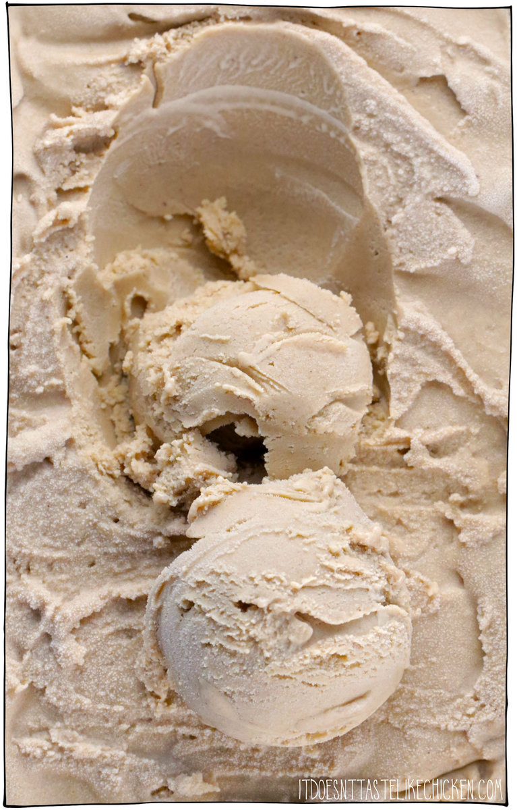

Vegan Coffee Ice Cream

Description
Do you love ice cream? Do you love coffee? Do you love being vegan?
Well, I have the perfect recipe for you! See below on how to make vegan coffee icecream!
Ingredients
- 1 1/2 cups raw cashews
- 1 cup plant-based milk
- 3/4 cups white sugar
- 1/2 cup espresso
- 1 teaspoon vanilla extract
Steps
- Soften, drain, and rinse the cashews
- Prepare your ice cream maker following the manufacturer's instructions
- Blend all the ingredients together in a blender
- Pour the ice cream mixture into the ice cream maker and let it do its thing for 25 minutes. Serve frozen and enjoy!